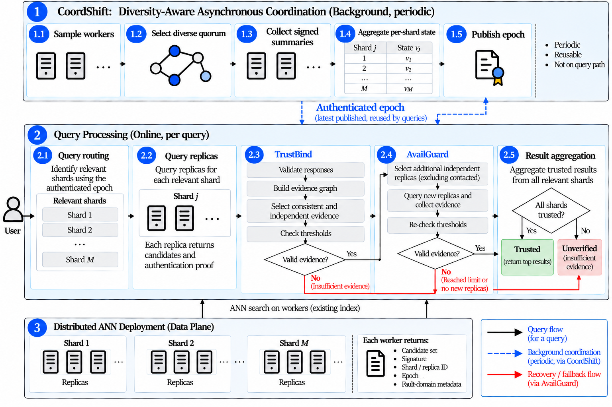
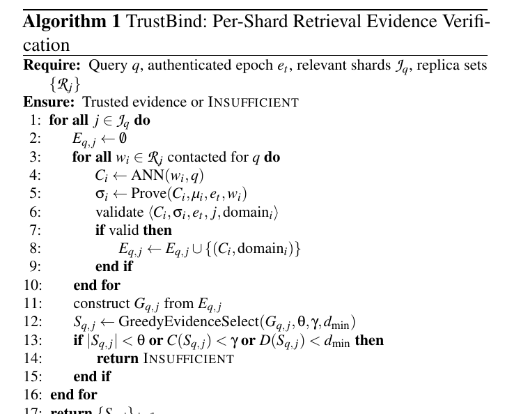

目录 · 9 节
1它到底在解决什么问题？2整体流程3TrustBind：三个条件同时满足才算数4CoordShift：把协调挪出查询路径5AvailGuard：补证据，但不降门槛6实验结果7我认为它的局限8一个推荐/搜索团队可以怎么试9一句话结论分布式向量库的副本机制能保证"查得到"，却不能保证"查到的是真的"：一个被攻破的副本可以返回签名完全合法、内容却被篡改的近邻结果。TrustANN 在不改 ANN 算法的前提下，在路由层之上加了一层中间件，按分片逐个检查"有没有足够多、彼此一致、又来自不同故障域的副本给出同样的答案"，证据不够就明确返回"未验证"，而不是悄悄把结果交出去。在亚马逊云上的 9 节点测试里，被篡改结果被当成可信结果的比例从 100% 降到 0，正常负载下 p95 延迟只多了 9.36%，三分之一副本宕机时仍能给出可信结果。
做检索安全、多租户向量服务或 RAG 后端的工程师值得读一读，原因是它把一个常被混在一起的问题拆开了：索引完整、副本在线，并不等于这次查询的结果可信。核心思想一句话：信任按查询、按分片单独判，协调工作放到后台，副本挂了就去找新的独立证据，但绝不降低门槛。不过这是单作者论文，实验只用了 10 万条向量、每组 100–150 条查询，几张表之间的延迟口径也不完全一致，更适合当设计参考。
它到底在解决什么问题？
用一个企业知识库检索的例子说明（示意）。向量库分成 3 个分片，每个分片 3 个副本，分别放在不同可用区。某天一台机器被入侵，攻击者让它在返回近邻时把一篇"内部报销制度"换成一篇伪造的版本。这台机器仍然持有合法密钥，签名验证照样通过；如果路由器只问它一个副本，或者只数"有几个副本回了话"，伪造结果就会被当成正常结果送进下游大模型。
| 示意场景 | 普通副本机制 | TrustANN 的做法 |
|---|---|---|
| 1 个副本返回篡改结果，另 2 个正常 | 可能只问到坏副本，直接采用 | 要求至少 2 个一致且来自不同故障域的副本 |
| 2 个回复来自同一可用区 | 当成 2 份证据 | 只算 1 个故障域，覆盖不够 |
| 副本宕机，证据不足 | 用剩下的凑合返回 | 去别的独立副本补证据，补不到就标"未验证" |
| 另一个分片证据很充足 | 不相关 | 不能拿来顶替本分片的缺口 |
这说明问题不在加密，而在"什么样的回复能算作证据"。作者的威胁模型是：每个分片 r 个副本里，最多 ⌈r/2⌉−1 个可能同时作恶，r=3 时就是最多 1 个。坏副本可以返回过期结果、漏掉真实近邻、塞进伪造候选或者打乱排序。
整体流程

整个系统分成两条路径。后台路径由 CoordShift 负责，每隔一段时间（实验里是 200 毫秒）生成一个带签名的协调纪元：里面是纪元编号，以及每个分片当前索引状态的摘要值（相当于各分片"现在是哪个版本"）。在线验证时，每份副本回复必须带上当前公认的纪元编号和有效签名，否则直接丢弃；这样过期的回复、或者重放上个版本的结果，就进不了证据集。一个纪元会被后续很多条查询复用。在线路径对每条查询依次做五步：确定要查哪些分片；向这些分片的副本发请求，每个副本跑普通的 HNSW 检索，并附上签名、分片号、副本号、纪元号和所属故障域；TrustBind 对每个分片单独检查证据；某个分片证据不够时，AvailGuard 去找新的独立副本补；最后所有分片都通过才把结果标为可信，并把各分片选中证据里的候选合并，按向量距离重新排序后取前几名返回。
两条路径只通过"纪元号"连接。每份回复的签名同时覆盖候选集、副本的索引状态和纪元号，所以回复和"哪个副本、在哪个版本上算的"绑在一起，事后无法改。但签名挡不住一个坏副本给旧结果或假结果附上当前纪元号再签名，这正是还需要后面一致性和独立性检查的原因：查询是否可信完全由在线路径判断，后台那一轮即使被坏节点影响，也不会直接让一条查询变成可信。
TrustBind：三个条件同时满足才算数
为什么不能只数副本？因为三份回复可能来自同一个机房，一起出故障；也可能两份互相矛盾，数量够了内容却对不上。TrustBind 因此对每个分片同时看三件事：
- 支持数：选出的回复至少 θ 个，θ = ⌈r/2⌉。r=3 时 θ=2，所以单个坏副本凑不够数。
- 一致性：任意两份回复之间算一个相似分，等于 λ×重合度 +（1−λ）×排序一致度。重合度是两份候选 ID 集合的交集除以并集；排序一致度只看两份都有的候选，把它们在两边的相对先后顺序做比较，归一化成 0 到 1 的分；可以理解为在共同候选里任取两个，两边先后顺序相同的对数占全部对数的比例，完全同序得 1，完全倒序得 0。把一组回复里所有两两分数取平均，要求不低于 γ。漏掉候选会拉低重合度，打乱顺序会拉低排序分，两种篡改都会被看到。
- 独立性：选出的回复要覆盖至少 d_min 个不同的故障域，比如可用区或网络域。同一个可用区回来的两份结果只算一个域。
选回复的方法是贪心的：先选和其他回复相似分总和最高的那一份，作为起点；之后每一步，在还没选的回复里挑一份加入，优先考虑来自尚未覆盖的故障域的回复，其中选让平均相似分提高最多的那份；直到三个条件都满足，或者没有可选的回复为止。

还有一条硬规定：证据不能跨分片借用。原因是作恶上限是按分片定义的，如果允许把分片 A 的多余证据拿来补分片 B，攻击者就可以在几个分片里各控制一个副本，靠总数凑过门槛。
用一个算例走一遍判定过程：分片 2 有三个副本，a1、a2 在可用区 a，b1 在可用区 b，设 θ=2、d_min=2。路由先问了 a1 和 a2，两份结果完全一致，支持数和一致性都达标，但只覆盖 1 个故障域，所以分片判为证据不足，交给 AvailGuard 去联系还没问过的 b1。如果 b1 的结果和 a 区一致，就选出一份 a 区回复加 b1，覆盖 2 个域，分片通过；如果 b1 宕机，或者 b1 被攻破、把第 3 名换成了伪造文档导致相似分低于 γ，就凑不出合格证据，整条查询返回"未验证"。
CoordShift：把协调挪出查询路径
为什么需要后台协调？每条查询都跑一次拜占庭共识（能容忍部分节点说谎的投票协议）太贵，会直接加到毫秒级的检索延迟上。CoordShift 的做法是周期性做一次轻量协调：先随机抽一个比需要更大的候选池，再从里面贪心挑出覆盖故障域最多的 k 个节点（k 和池子大小都是部署参数，k 越大协调流量越多），收集它们签名的状态摘要；每个分片取多数一致的值，没有多数就沿用上一轮的值；一轮什么都没收到就当作空转，下一轮重新抽样。
作者明确说这不是一个新的共识协议，它产出的只是"有签名、可复用的参考状态"，并不担保内容一定正确。查询的安全性仍然交给 TrustBind 和 AvailGuard。这样设计的意义在于：协调慢了或者被干扰了，查询照样用上一个纪元跑，不需要等。
AvailGuard：补证据，但不降门槛
副本宕机后，系统往往还能返回结果，但可信证据变少了。简单地多问几个副本有风险：新问到的可能和原来那份来自同一个故障域，甚至一起被攻破。AvailGuard 保留已经收到的有效证据，优先找能覆盖新故障域的副本，已经出现可疑或冲突回复的故障域往后排。补充有上限：每个分片最多额外联系 K_max 个副本（默认 1），用完了还不够就返回"未验证"。它既不会把 θ 调低，也不会用别的分片的证据来顶。
实验结果
实验在亚马逊云的虚拟机上做：一台协调节点放路由、TrustBind、AvailGuard 和 CoordShift，9 台工作节点组成 3 分片 × 3 副本；数据是 Deep10M 的 10 万条 96 维向量子集，每个副本用 FAISS 的 HNSW 索引。对照组是同一套部署、去掉验证层的普通分布式 ANN。攻击成功率指"被篡改结果被标成可信"的查询比例。
| 实验 | 对照 / 条件 | TrustANN | 说明 |
|---|---|---|---|
| 单个坏副本攻击，攻击成功率 | 不验证：100%；θ=1：100% | θ=2：0% | 门槛是防护的关键 |
| 只用支持数或支持数+一致性 | 攻击成功率 100% | 完整规则：0% | 三项条件要一起用 |
| 跨分片协同攻击，K_max=0/1/2 | — | 攻击成功率始终 0% | 补证据不会借用别的分片 |
| 正常负载吞吐 / p95 | 1050 QPS / 1.006 ms | 967 QPS / 1.100 ms | p95 多 9.36% |
| 副本随机宕机 33% | — | 可信率 100% | 49% 时降为 0 |
这组结果说明了三件事。第一，单靠"至少两个副本"还不够。消融实验里，只看数量、或只看数量加一致性时，规则都凑出了 2 份回复（其中一份被篡改）并判为可信，攻击成功；换成完整的三项规则后，同一批攻击全部被拒。作者也说明，这组消融比较的是整条规则开或关，并没有把一致性和独立性各自挡住了多少单独拆开，所以只能得出"三项要一起用"的结论。第二，正常情况下的代价不大，吞吐少了约 8%，p95 多了约 0.1 毫秒。第三，可用性的边界很清楚。实验按比例在全部副本中随机均匀地停掉一部分，9 台里停 33% 约是 3 台：从可信率仍为 100% 看，每个分片都还能凑出两份独立回复；停到 49% 约是 4 到 5 台，可信率降为 0，说明相关分片剩下的副本已经凑不出两份，系统宁可全部返回"未验证"，也不放松门槛。
后台协调的测试里，查询负载从每秒 50 条加到 400 条，没有一条查询需要等协调完成，这意味着协调确实不在查询路径上。查询扇出从 1 个分片加到 3 个时，p95 从 1.51 毫秒升到 7.46 毫秒，主要是要收集和比对的回复从 3 份变成 9 份。
我认为它的局限
- 延迟口径前后不一。 正常负载对比里 p95 只多 9.36%，但在单坏副本实验里，开启 θ=2 后 p95 约变成原来的 3.6 倍。因为这两组数字来自不同配置，读者很难据此估算自己系统的真实开销。
- 规模和攻击都偏小。 只有 10 万条向量、9 个节点、每组 100–150 条查询，攻击也只模拟了单个坏副本。在每台负载固定、节点数从 18 台扩到 144 台（8 倍）的实验里，理想情况下总吞吐也该涨 8 倍，实际只从每秒 908.6 条涨到 1176.5 条；并行效率等于实际吞吐除以理想吞吐，掉到 0.162，说明节点多了以后证据收集本身会成为瓶颈。
- 部分测试缺少正样本对照。 在漏候选和乱排序两种攻击的表里，干净条件下的可信率也是 0，这组结果只能说明"没被骗"，不能说明"正常结果能通过"。另外，故障域信息依赖部署方如实配置，配错了独立性检查就形同虚设。
一个推荐/搜索团队可以怎么试
- 先盘点故障域。 把向量服务每个分片的副本按可用区、机架、管理团队标好，看看有多少分片的副本其实挤在同一个域里。
- 离线比对副本回复。 抽一批线上查询，同时打到同一分片的所有副本，计算候选重合度和排序一致性，先摸清正常情况下 γ 应该设多少，避免误报。
- 影子模式跑验证。 在不影响线上返回的前提下，对一小部分高敏感查询（比如权限相关文档检索）做 θ=2 的验证，只记录"未验证"的比例和多出来的延迟。
- 再决定拦不拦。 如果"未验证"比例很低、延迟可接受，再把它接到下游：对未验证的结果降权、提示或拒答。
一句话结论
| 维度 | 评价 |
|---|---|
| 问题价值 | 高，副本作恶时"结果可信"一直缺少专门机制 |
| 方法新意 | 中，把多数投票、一致性和故障域覆盖组合成按分片的判定规则 |
| 证据强度 | 偏弱，规模小、单作者、延迟口径不统一 |
| 落地难度 | 中，中间件不改索引，但每条查询要多问副本 |
| 适合谁 | 多租户向量服务、RAG 检索的安全负责人 |
TrustANN 把"这次检索结果能不能信"变成一个明确的、可以说"不"的判断，思路值得借鉴，但具体开销要在自己的系统里重新测。
读完这篇，你觉得
夜读鸮记下了，谢谢你的反馈。
点一下即可，无需登录；再点一次撤回。只统计匿名次数，不记录你是谁。
讨论
欢迎补充实验细节、复现经验或不同看法。需 GitHub 登录。
正在加载讨论…